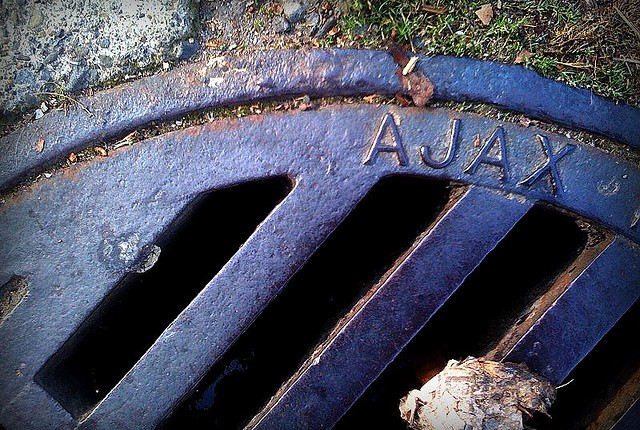

Discovering UJS with AJAX
Having worked with Rails a while I’d heard of UJS as being Unobtrusive JavaScript. I had thought that it was simply a pattern of writing your JavaScript in a JS file to be called via a method call rather than inline JavaScript within elements in the view. So I had definitely overlooked the benefit of what UJS is. In case you didn’t know UJS is actually a plugin that helps implement behavior blocks, but that’s not all it does.
My first real experience discovering the advantage of having UJS was with the GoRails tutorial “jQuery UJS and AJAX” by Chris Oliver (@excid3). After watching the video tutorial my mind was blown! I was shocked to see a demonstration where you click a link on your site and it executes a JavaScript file on the client directly from the server. This opened up so many possibilities for me and I’m quite happy about it. Be sure to check it out!
Applying What I Learned
Now I wanted to use this knowledge to put off loading things in my website until they were needed. I had three complex Bootstrap modals that were popup dialogs for various things like sending invites, creating contacts, and a less complex feedback feature. I was currently loading the html for these as partials within my left nav menu partial. This caused the load time for just the left nav menu to be over 400 milliseconds.
I removed the render partial commands for the three partials:
<%# Removed these lines from layouts/nav_left %>
<%= render 'layouts/invite' %>
<%= render 'layouts/feedback' %>
<%= render 'layouts/new_contact' %>Since I did the same things for each partial I will continue by demonstrating only what I did with the Invite partial.
I decided I wanted to have my JavaScript files write HTML directly to a div I placed withing the main template.
<%# /app/views/layouts/application.rb %>
<div id="ujs_in"></div>Then I created a ujs folder in my views directory and wrote files for each partial like this:
// /app/views/ujs/invite.js.erb
$("#ujs_in").html("<%= j render(partial: 'layouts/invite') %>");
$('#inviteModal').modal(); // Open Bootstrap modal windowI changed the hyperlinks in the nav menu to no longer call the Bootstrap modal but now act as an AJAX link request. Changed it from:
<%# /app/views/layouts/_nav_left.html.erb %>
<a href="#" data-toggle="modal" data-target="#inviteModal">
Invite Friends
</a>to:
<%# /app/views/layouts/_nav_left.html.erb %>
<%= link_to "Invite Friends".html_safe,
ujs_path('invite'), method: :patch, remote: true %>The ujs_path you see above is a path helper I made:
# /app/helpers/routes_helper.rb
module RoutesHelper
def ujs_path(file)
"/ujs/#{file.to_s}"
end
endSo far so good. But now we need routes to make the paths valid. So I created routes for it as follows:
# /config/routes.rb
scope :ujs, defaults: { format: :ujs } do
patch 'invite' => 'ujs#invite'
endAnd then I dropped in a controller to match:
# /app/controllers/ujs_controller.rb
class UjsController < ApplicationController
def invite; end
endWe don’t need to do anything in the Controller as we’re only going to have the “template”, our UJS JavaScript file, get loaded directly.
And that finished the work that needed to be done. So I open the website and the nav_left partial now loads in only 40 milliseconds! That’s right I shaved off 90% of its load time by externalizing those partials into UJS/AJAX calls. And when testing the links the site ran exactly the same as it had before. Only now it’s much faster.
So when a UJS/AJAX hyperlink gets clicked it executes the template file directly from the server. And with rendering partials via the <%= j render(partial: ‘layouts/invite’) %> JavaScript render method it gets the same job done and saves a bunch on car insur…. I mean load time!
Summary
The GoRails tutorials are a great resource for learning some helpful and powerful things. Check it out and sign up!
As you can see that even when we think we understand what something is, such as believing UJS was just a pattern, it still benefits us to research and verify. That which you think you know may indeed be something you need to know. And I’ve barely scratched the surface of what UJS is and what it’s designed for. More details on UJS is available here: http://www.ujs4rails.com/. It looks like a fun item to utilize.
There are so many ways this can be beneficial in your projects. Why waste time loading resources when you can save it for when it’s needed? I’m happy Chris Oliver took the time to make that tutorial. And I hope that this was insightful and educational for you as well!
Please comment, share, subscribe to my RSS Feed, and follow me on twitter @6ftdan!
God Bless!
-Daniel P. Clark
Image by Mike Johnston via the Creative Commons Attribution 2.0 Generic License.
McFlyyy
February 2, 2015 - 2:31 am
Damn. Last post on your ujs4rails link was in 2006
Can it still be something relevant almost 10 years later; a time when we have js frameworks all around the place ?
Daniel P. Clark
February 2, 2015 - 10:13 am
UJS is built in to Rails as a feature. Here’s a much more recent article on UJS as it’s currently used in Rails http://robots.thoughtbot.com/a-tour-of-rails-jquery-ujs including links/dialogs/validations/CSRF.
Many people may choose not to use a front end JS framework, but it’s still great to be able to get a lot of the same things accomplished.
McFlyyy
February 2, 2015 - 10:24 am
Sorry I trolled a bit on this one.
I subscribed to rubyflow to get hot & new rails stuff; i’m a bit disapointed sometimes. but it is just my plain point of view.
Daniel P. Clark
February 2, 2015 - 10:57 am
It’s cool. This was new to me and I’m sure it will be new to many others. I haven’t taken the time to learn a JS front end framework yet. I’m holding out for Volt since I believe it’s the future to bridging the gap between JavaScript and Rails type frameworks.
McFlyyy
February 2, 2015 - 10:59 am
JS frameworks are a pain to learn; they suppose you already have some stack very weel built stack behind, when not an industry-class api
I’d like to see Volt bring ruby (at large) further
Karl Smith
February 2, 2015 - 12:04 pm
Dan, excellent idea. So good, I started doing the exact same thing about a year ago. I pulled all my modals into partials and load them vis UJS.
The only part I don’t like is if the server is a little busy, it can take a few seconds for the modal to appear. Some users are confused and click the “modal” button several times. Thus I want to show a spinner while they wait and disable the “modal” button. I thought of using an empty modal div structure, then just replacing the .modal-body. But I was also using the modal header and footer, but I didn’t like 3 js.html() to replace 3 divs. Yes, I could just replace the entire modal div structure, but that caused a screen flash.
So I decided to just put the spinner in the button the user clicks to display the modal instead. It required attaching a “click” handler to the button (link), but jQuery makes all of that easy.
My thinking was along the lines that users probably need to view modals less than 1% of the time. Why render and load all of that if no one is using it?
6ft2in Karl
Daniel P. Clark
February 2, 2015 - 12:56 pm
I hadn’t considered a spinner. That’s a great idea. You’ve inspired something similar for me. Let me know what you think. For each modal link that we implement the UJS/AJAX feature we add the class loadable. Then just add this JavaScript and the links are all taken care of:
Karl Smith
February 2, 2015 - 1:10 pm
Have you been reading my code? Looks exactly like mine, minus disable/enable the the button (link).
I needed this because some of my users are mad-clickers. If something doesn’t appear instantly, click it again, and again. I would see them click the button 4+ times in the logs. Not a huge deal but if the site comes under heavy load, every little bit counts.
Daniel P. Clark
February 2, 2015 - 1:12 pm
Yours is better because it disables the link. Whereas mine merely changes its appearance. I think they work well together.
Daniel P. Clark
February 2, 2015 - 8:50 pm
I believe I’ve found a quirk implementing this in UJS “link_to(image_tag …) …)”. If I add a class attribute within the link_to then it fails to do a PATCH request and tries via GET. I believe it has to do with the jQuery listener I wrote interfering with the way UJS is implemented. I don’t believe it’s class related. I changed the CSS selector in my JavaScript listener to $(‘[href^=”/ujs/”]’) and that caused the same PATCH to GET error. I was unable to find away around this. If I were to guess UJS should have a way of monkey-patching behavior in their call methods.
Side note: I’ve also found that button_to with CSS background image is better than the link_to image_tag combo.
Have you run into this JS event handler issue?
Karl Smith
February 2, 2015 - 9:15 pm
No. But now that you mention it, I have just been using GET.
Since I wasn’t really supplying data for a update/create I chose GET. Even though it may not check the authenticity_token, I’m not really changing data, and all my users must have an valid session so I figured GET is good enough.
But it looks like in your example you are “inviting friends” so I see the desire for PATCH and the passed authenticity_token. But if the modal contains the button (link) that actually initiates the invitation, then I think you could use a GET for the modal return partial. Then use a form/submit (with authenticity_token) in the modal to initiate the invitation.
Daniel P. Clark
February 2, 2015 - 9:23 pm
Yes that makes sense. The modals were originally required in a GET request. So changing my method: :patch and my routes to get should allow the jQuery hook to work. I’d like to figure out sometime what happened in UJS/JS that caused this.
Daniel P. Clark
February 3, 2015 - 12:26 pm
I found the solution. In The Rails 4 Way chapter 19.1.3 jQuery UJS Custom Events. They have an event handler ‘ajax:before‘. So substituting click for ajax:before allows UJS to work properly.
Marc Gayle
July 18, 2015 - 3:36 am
Don’t mean to butt in to this discussion gents, but I think I may have a more elegant & simple way to do what you guys are trying to do.
Rather than writing custom JS to detect the click event on the button, and then replace it with ‘…loading…’, you could simply just add `data: { disable_with: “Loading…”}` to your `link_to` and while the the form is processing (i.e. waiting for your server to respond) it disables the button/link and replaces it with that ‘Loading…’ message until the operation is done and then reverts it when the operation is complete.
I can’t take credit for it, Chris covered it in a GoRails episode you linked up in another post Daniel and I loved the episode so much I had to take the time to come and give you this pro-tip. You can find the part where he talks about it here: https://youtu.be/CtDjQznAZR8?t=681
Sure, this solution is not fancy, but it gets the job done with no extra JS written – just using the built in `jquery_ujs` stuff.
Let me know if that works out for you guys 🙂
Daniel P. Clark
July 18, 2015 - 10:14 pm
Thanks Marc! I’ve tried this before. I’m not sure about it reverting though. It worked for page reloads, but I don’t think it reverted for dynamic AJAX responses. It’s been a while so I don’t know the specifics; only that it didn’t work out for me.
Marc Gayle
July 19, 2015 - 1:41 am
That’s strange, because I just implemented it in my app and it worked like a charm. Very closely to how Chris shows in the video.
*shrugs*
Just thought I would suggest it, in case you guys missed it by any chance 😐
Ray
February 2, 2015 - 5:58 pm
where does the #inviteModal div come from? Is that in your invite partial? if so, can you provide the sample code block in your blog post? Thanks
Daniel P. Clark
February 2, 2015 - 6:12 pm
Yes the div is in the invite partial /app/views/layouts/_intite.html.erb. The invite partial is rather large for pasting here. I’ve got SMS/email/Twitter all built-in within Bootstrap tabs inside the modal. Bootstrap’s modals are well documented here: http://getbootstrap.com/javascript/#modals
I’ll include a few lines of the partial file _invite.html.erb:
Bryan Metzger
August 26, 2016 - 4:22 pm
Man I hate to bring up a thread this old, but I was wondering how you would fire this off if you didn’t have access to a link_to helper. I figure it would be done on click with a $.ajax call, but I’m not certain.
Daniel P. Clark
August 29, 2016 - 1:15 pm
You can follow the Rails guide for it: http://guides.rubyonrails.org/working_with_javascript_in_rails.html
Also there are JavaScript hooks provided for Ajax calls: https://github.com/rails/jquery-ujs/wiki/ajax